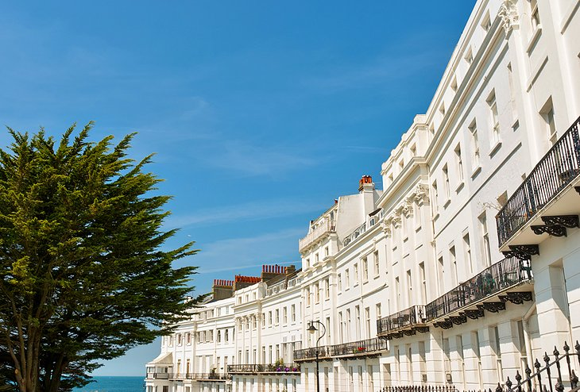

Regency Houses
Coming towards the beach in Brighton’s residential areas, west of the town center heading towards Hove you will come across the Regency Houses. These houses are normally cream with round bay windows and iron balconies. The best places to look at these houses Regency Square, Brunswick Terrace, Brunswick Square, and the horseshoe-shaped Adelaide Crescent. You may also want to stop east of the town center such as Sussex Square, Lewes Crescent, and Arundel Terrace. Next Stop
